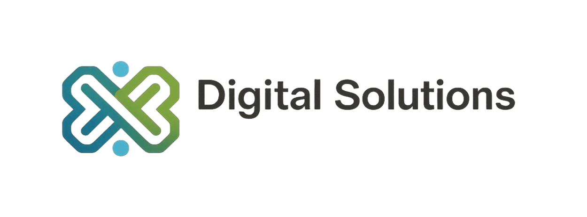

Introducción
El presente informe tiene como objetivo analizar un prototipo de aplicación web Digital
Product, evaluando su arquitectura técnica, la estructura del servidor, así como los
principios de usabilidad, Experiencia de Usuario (UX) e Interfaz de Usuario (UI).
A través de este análisis se busca identificar fortalezas y oportunidades de mejora,
relacionando los hallazgos prácticos con los conceptos teóricos estudiados en la unidad, con
el fin de comprender la importancia de la usabilidad y el diseño centrado en el usuario en
aplicaciones web.
Descripción del prototipo
El prototipo analizado corresponde a una aplicación web de gestión, orientada al manejo de
usuarios y productos mediante un sistema de autenticación y control de accesos. La
aplicación permite organizar y administrar información de forma estructurada, garantizando
la seguridad de los datos a través de la asignación de roles.
La aplicación está dirigida principalmente a usuarios finales y administradores, como
pequeñas empresas o proyectos digitales que requieren gestionar información de manera
segura y eficiente. Cada tipo de usuario cuenta con permisos diferenciados, lo que permite
controlar las acciones que pueden realizar dentro del sistema.
El objetivo principal del sistema es permitir el acceso seguro a la aplicación mediante
procesos de autenticación, diferenciando los permisos entre usuarios estándar y
administradores. De esta manera, se busca asegurar que únicamente los usuarios
autorizados puedan realizar acciones críticas, como la gestión de productos o la
administración de usuarios.
Funcionalidades
- Registro e inicio de sesión de usuarios
- Autenticación mediante token JWT
- Control de acceso basado en roles (administrador y usuario)
- Gestión de productos (crear, editar y eliminar)
- Protección de rutas y validación de permisos
Justificación
Esta aplicación de gestión basada en la web ha sido desarrollada debido a la demanda de
herramientas seguras, ordenadas y efectivas para manejar usuarios y productos en el mundo
digital. Actualmente, numerosos pequeños negocios y proyectos digitales tienen datos
propietarios o sensibles que necesitan proteger, la gestión de acceso y la organización de
datos son importantes. El sistema también está construido sobre el proceso de autenticación
y autorización utilizando enfoques contemporáneos como la autenticación basada en tokens
JWT y el control de acceso basado en roles. Como resultado, garantiza que cada usuario
solo experimente lo que es relevante para ese perfil, minimizando el potencial de abuso o
acceso no autorizado. Así, tiene una distinción de roles que ayuda a mantener el control de
funciones críticas, como la manipulación de productos y la gestión de cuentas de usuario.
De esta manera, se mejora la integridad del sistema y se mejora la eficiencia en la gestión
de la información.
Objetivos Generales
Desarrollar e implementar, en un período de dos meses, una página web para la comercialización de computadores reacondicionados, promoviendo la reducción de residuos electrónicos y contribuyendo a la protección de los ecosistemas terrestres en el marco del ODS 15.
Objetivos especificos
- Diseñar y desarrollar una página web funcional y atractiva que permita visualizar, describir y comercializar computadores reacondicionados.
- Desarrollar una página web completamente funcional, tomando como guía los principios heurísticos de usabilidad propuestos por Jakob Nielsen, con el fin de garantizar una experiencia de usuario intuitiva, eficiente y accesible.
- Diseñar la página web con un enfoque en la protección de los ecosistemas terrestres, alineando su contenido y propósito con el Objetivo de Desarrollo Sostenible 15 Vida de Ecosistemas Terrestres, fomentando la reutilización tecnológica como estrategia ambiental.
- Implementar el funcionamiento de la página web mediante el uso de los lenguajes de programación HTML, CSS y JavaScript, asegurando una estructura adecuada, diseño visual atractivo e interactividad eficiente.